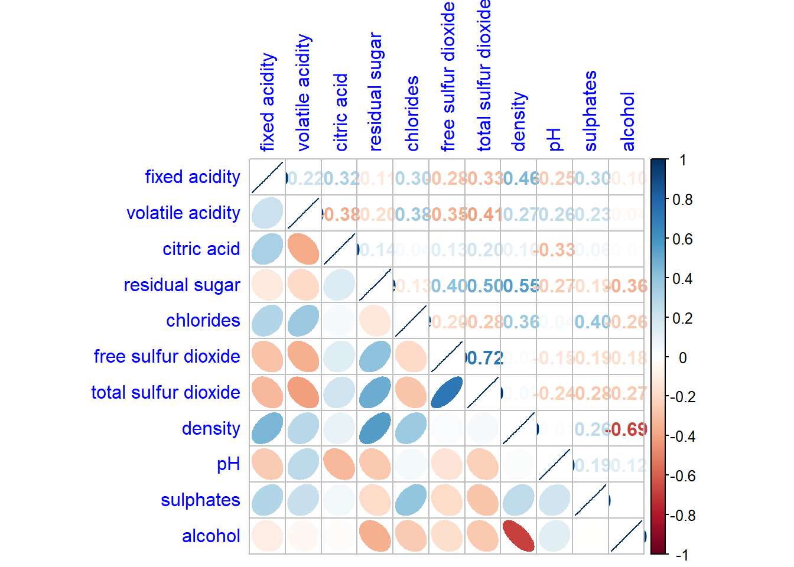

pacman::p_load(corrplot, tidyverse, ggstatsplot, GGally)In-class Exercise 5
Getting Started
Install and launching R packages
Two packages will be installed and loaded. They are: tidyverse, ggiraph
Read data
wine <- read_csv("data/wine_quality.csv")
glimpse(wine)Rows: 6,497
Columns: 13
$ `fixed acidity` <dbl> 7.4, 7.8, 7.8, 11.2, 7.4, 7.4, 7.9, 7.3, 7.8, 7…
$ `volatile acidity` <dbl> 0.700, 0.880, 0.760, 0.280, 0.700, 0.660, 0.600…
$ `citric acid` <dbl> 0.00, 0.00, 0.04, 0.56, 0.00, 0.00, 0.06, 0.00,…
$ `residual sugar` <dbl> 1.9, 2.6, 2.3, 1.9, 1.9, 1.8, 1.6, 1.2, 2.0, 6.…
$ chlorides <dbl> 0.076, 0.098, 0.092, 0.075, 0.076, 0.075, 0.069…
$ `free sulfur dioxide` <dbl> 11, 25, 15, 17, 11, 13, 15, 15, 9, 17, 15, 17, …
$ `total sulfur dioxide` <dbl> 34, 67, 54, 60, 34, 40, 59, 21, 18, 102, 65, 10…
$ density <dbl> 0.9978, 0.9968, 0.9970, 0.9980, 0.9978, 0.9978,…
$ pH <dbl> 3.51, 3.20, 3.26, 3.16, 3.51, 3.51, 3.30, 3.39,…
$ sulphates <dbl> 0.56, 0.68, 0.65, 0.58, 0.56, 0.56, 0.46, 0.47,…
$ alcohol <dbl> 9.4, 9.8, 9.8, 9.8, 9.4, 9.4, 9.4, 10.0, 9.5, 1…
$ quality <dbl> 5, 5, 5, 6, 5, 5, 5, 7, 7, 5, 5, 5, 5, 5, 5, 5,…
$ type <chr> "red", "red", "red", "red", "red", "red", "red"…pairs(wine[,1:11])
pairs(wine[,2:12])
Drawing the lower corner
pairs(wine[,2:12], upper.panel = NULL)
display on upper
pairs(wine[,2:12], lower.panel = NULL)
ggcorrmat
Visualization of a correlation matrix. The message below x = … explain the significant level. We also have an option to resize the cross according to the significant level.
ggstatsplot::ggcorrmat(
data = wine,
cor.vars = 1:11)
ggstatsplot::ggcorrmat(
data = wine,
cor.vars = 1:11,
ggcorrplot.args = list(outline.color = "black",
hc.order = TRUE,
tl.cex = 10),
title = "Correlogram for wine dataset",
subtitle = "Four pairs are no significant at p < 0.05"
)
Include correlation coefficient
Correlation plot
Corrplot is not a ggplot extension but based on Rgraphic
ggcorrplot will require the object .corr which can be generated with the command cor.
wine.cor <- cor(wine[, 1:11])
corrplot(wine.cor)
Correlogram
The slimmer one represents highly correlate relationship.
corrplot(wine.cor,
method = "ellipse") 
corrplot(wine.cor,
method = "ellipse",
type="lower")
corrplot.mixed allows us to combine the corrplot and the corrmat.
corrplot.mixed(wine.cor,
lower = "ellipse",
upper = "number",
tl.pos = "lt",
diag = "l",
tl.col = "blue")
From the plot below, we can see the highly correlate group.
corrplot(wine.cor,
method = "ellipse",
tl.pos = "lt",
tl.col = "black",
order="hclust",
hclust.method = "ward.D",
addrect = 3)
Generalised Pairs plot
ggpairs(wine, columns = 1:12)Ternary diagram with R
package use
pacman::p_load(ggtern, plotly, tidyverse, tidyr)read data
pop_data <- read_csv("data/respopagsex2000to2018_tidy.csv") prepare data
agpop_mutated <- pop_data %>%
mutate(`Year` = as.character(Year))%>%
spread(AG, Population) %>%
mutate(YOUNG = rowSums(.[4:8]))%>%
mutate(ACTIVE = rowSums(.[9:16])) %>%
mutate(OLD = rowSums(.[17:21])) %>%
mutate(TOTAL = rowSums(.[22:24])) %>%
filter(Year == 2018)%>%
filter(TOTAL > 0)see how the data look like
agpop_mutated# A tibble: 234 × 25
PA SZ Year AGE0-…¹ AGE05…² AGE10…³ AGE15…⁴ AGE20…⁵ AGE25…⁶ AGE30…⁷
<chr> <chr> <chr> <dbl> <dbl> <dbl> <dbl> <dbl> <dbl> <dbl>
1 Ang Mo K… Ang … 2018 180 270 320 300 260 300 270
2 Ang Mo K… Chen… 2018 1060 1080 1080 1260 1400 1880 1940
3 Ang Mo K… Chon… 2018 900 900 1030 1220 1380 1760 1830
4 Ang Mo K… Kebu… 2018 720 850 1010 1120 1230 1460 1330
5 Ang Mo K… Semb… 2018 220 310 380 500 550 500 300
6 Ang Mo K… Shan… 2018 550 630 670 780 950 1080 990
7 Ang Mo K… Tago… 2018 260 340 430 500 640 690 440
8 Ang Mo K… Town… 2018 830 930 930 860 1020 1400 1350
9 Ang Mo K… Yio … 2018 160 160 220 260 350 340 230
10 Ang Mo K… Yio … 2018 810 1070 1300 1450 1500 1590 1390
# … with 224 more rows, 15 more variables: `AGE35-39` <dbl>, `AGE40-44` <dbl>,
# `AGE45-49` <dbl>, `AGE50-54` <dbl>, `AGE55-59` <dbl>, `AGE60-64` <dbl>,
# `AGE65-69` <dbl>, `AGE70-74` <dbl>, `AGE75-79` <dbl>, `AGE80-84` <dbl>,
# AGE85over <dbl>, YOUNG <dbl>, ACTIVE <dbl>, OLD <dbl>, TOTAL <dbl>, and
# abbreviated variable names ¹`AGE0-4`, ²`AGE05-9`, ³`AGE10-14`, ⁴`AGE15-19`,
# ⁵`AGE20-24`, ⁶`AGE25-29`, ⁷`AGE30-34`using same feature with ggplot2. ggtern add in the z.
ggtern(data=agpop_mutated,aes(x=YOUNG,y=ACTIVE, z=OLD)) +
geom_point()
Heatmap
wh <- read_csv("data/WHData-2018.csv")
wh# A tibble: 156 × 12
Country Region Happi…¹ Whisk…² Whisk…³ Dysto…⁴ GDP p…⁵ Socia…⁶ Healt…⁷
<chr> <chr> <dbl> <dbl> <dbl> <dbl> <dbl> <dbl> <dbl>
1 Albania Centr… 4.59 4.70 4.48 1.46 0.916 0.817 0.79
2 Bosnia and He… Centr… 5.13 5.22 5.04 1.88 0.915 1.08 0.758
3 Bulgaria Centr… 4.93 5.02 4.84 1.22 1.05 1.52 0.712
4 Croatia Centr… 5.32 5.40 5.24 1.77 1.12 1.16 0.737
5 Czech Republic Centr… 6.71 6.78 6.64 2.49 1.23 1.49 0.854
6 Estonia Centr… 5.74 5.82 5.66 1.46 1.2 1.53 0.737
7 Hungary Centr… 5.62 5.70 5.54 1.97 1.17 1.40 0.732
8 Kosovo Centr… 5.66 5.76 5.57 2.26 0.855 1.23 0.578
9 Latvia Centr… 5.93 6.00 5.86 2.14 1.15 1.45 0.671
10 Lithuania Centr… 5.95 6.04 5.87 2.13 1.20 1.53 0.716
# … with 146 more rows, 3 more variables: `Freedom to make life choices` <dbl>,
# Generosity <dbl>, `Perceptions of corruption` <dbl>, and abbreviated
# variable names ¹`Happiness score`, ²`Whisker-high`, ³`Whisker-low`,
# ⁴Dystopia, ⁵`GDP per capita`, ⁶`Social support`, ⁷`Healthy life expectancy`prepare data
Move the country column to replace the id so the heatmap is able to label the x-axis.
row.names(wh) <- wh$Country